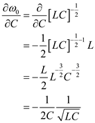
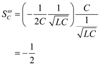
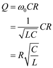
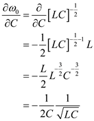
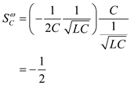
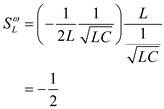
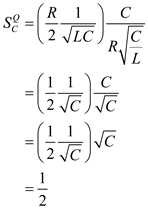

The sensitivity of  to the capacitance C is,
to the capacitance C is,
Differentiate the resonant frequency with respect to 

Now the sensitivity of  to the capacitance C is,
to the capacitance C is,

Thus, the sensitivity of  to the capacitance C is,
to the capacitance C is,  .
.
Refer to Figure 16.18 (d) in the textbook for the Band-Pass (BP) structure of second-order filter using the LCR resonator.
Write the expression for the transfer function of the band pass filter.
Compare the denominator part with the standard second order system .
The resonant frequency of the LCR resonator is,
And the quality factor is,

The sensitivity of to the capacitance C is,
Differentiate the resonant frequency with respect to

Now the sensitivity of to the capacitance C is,

Thus, the sensitivity of to the capacitance C is, .
The sensitivity of  to the capacitance L is,
to the capacitance L is,
Differentiate the resonant frequency with respect to 
Now the sensitivity of  to the capacitance
to the capacitance  is,
is,

Thus, the sensitivity of  to the capacitance L is,
to the capacitance L is,  .
.
The sensitivity of  to the capacitance R is,
to the capacitance R is,
As the resonant frequency is independent of the resistance, its sensitivity to resistance is zero.
Thus, the sensitivity of to the resistance R is, .
 to the capacitance C is,
to the capacitance C is,
Differentiate the quality factor with respect to 
Now the sensitivity is,

Thus, the sensitivity of  to the capacitance C is,
to the capacitance C is,  .
.
The sensitivity of  to the resistance R is,
to the resistance R is,
Differentiate the quality factor with respect to 
Now the sensitivity is,
Thus, the sensitivity of to the resistance R is,  .
.
The sensitivity of  to the inductance L is,
to the inductance L is,
Differentiate the quality factor with respect to 
Now the sensitivity is,
Thus, the sensitivity of  to the inductance L is,
to the inductance L is,  .
.